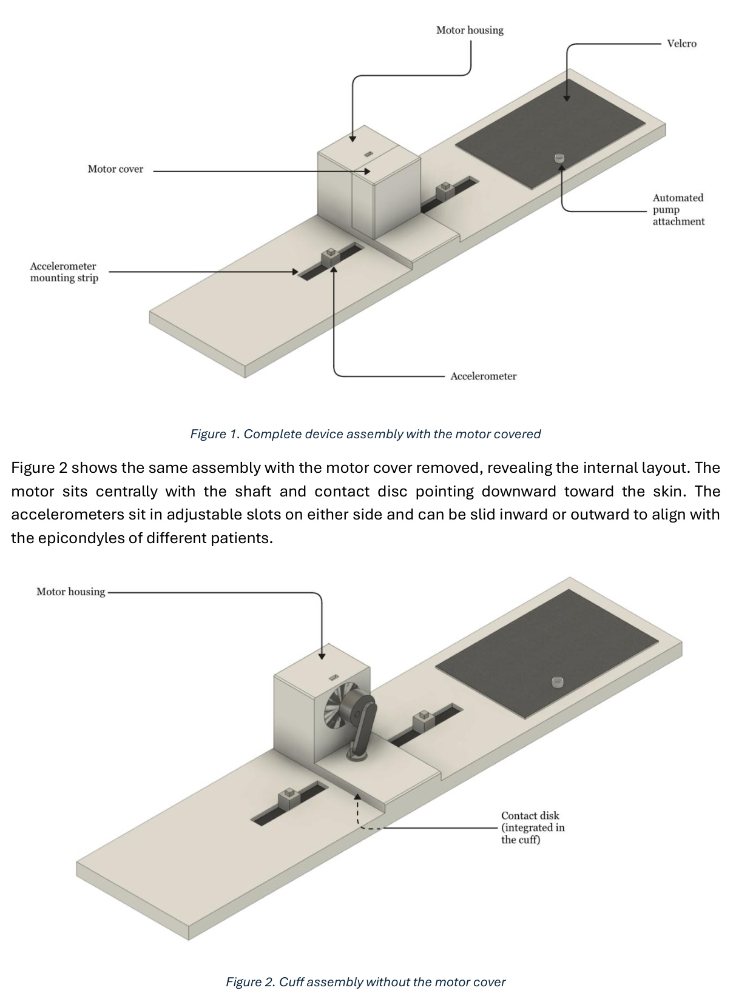

The follow-up problem
Our group explored how a non-invasive device might support follow-up after a fracture. The clinical motivation was to observe healing over time and identify patients who might need further assessment, without treating every follow-up as an isolated measurement.
We compared bone-assessment approaches including DEXA, CT, MRI, ultrasound, implant-based sensing and vibration-based monitoring. The concept we developed used an external vibration source and accelerometers to track changes in the limb's mechanical response.
The intended setting was a community or clinical point of care. A clinician would review longitudinal measurements and decide whether a patient needed fracture-clinic review or imaging. This was a proposal for decision support, with clinical effectiveness still to be established.
How the proposed device worked
The team's mechanical concept combined an inflatable cuff, a vibration motor with a contact disc, and two accelerometers on adjustable mounting strips. The adjustable geometry was intended to accommodate different patients and maintain consistent contact.
A controlled frequency sweep would produce a measured response spectrum. Repeated visits would build a patient-specific trajectory. The proposed software would compare this trajectory with labelled clinical data to support assessment of non-union risk.
- PositionFit the cuff and align the sensing points.
- MeasureApply a controlled vibration sweep and record the response.
- CompareTrack the spectrum against earlier visits.
- ReviewPresent the trend to a clinician for assessment.

The group report explored cross-spectrum features and a supervised model trained on future clinical-trial data. Patient-labelled training data, repeatability testing and clinical validation were dependencies, rather than completed capabilities.
My contribution
As Communications and Fundraising Officer, I initially expected to concentrate on presentation and funding sources. The work quickly became more technical: explaining a medical-device venture credibly required understanding its mechanism, evidence and place in the clinical workflow.
Identity and digital presence
I worked with the Chief Designer and Market Researcher on the OsteoTrack logo, brand identity and launch page. The aim was to present an orthopaedic monitoring platform in a professional, recognisable way, consistent with its early stage of development.
Clinical and commercial positioning
I helped distinguish the person benefiting from the device from the organisation buying it. Patients were the intended beneficiaries, while clinicians, fracture-clinic leads and procurement teams would influence adoption. That distinction shaped the communication strategy.
Intellectual property and funding
I researched relevant intellectual property, early-stage startup planning and fundraising routes. A preliminary patent review raised questions for a future freedom-to-operate assessment; it did not establish freedom to operate or secure patent protection.
A staged route to adoption
I helped frame the venture around milestones that could reduce technical and commercial uncertainty. Early communication would support prototype refinement and pilot engagement, then grow with the quality of the clinical evidence.
The group considered private orthopaedic clinics as an initial route for feedback, with NHS adoption as a longer-term objective. Conference presentations, professional engagement and clinical white papers were proposed channels for reaching the people who would evaluate the device.
| Stage | Evidence to establish | Funding direction |
|---|---|---|
| Feasibility | Prototype refinement, IP review and initial repeatability | University and early translational support |
| Proof of concept | Technical evidence and credible clinical partners | Non-dilutive health-innovation grants |
| Pilot readiness | Quality processes and a clinical validation plan | Larger translational programmes |
| Commercial development | Stronger evidence of utility and adoption | Seed investment or debt where appropriate |
The report explored a per-patient pricing model and longer-term financial projections. These were planning assumptions, not sales, funding secured or demonstrated NHS savings. I treated grants and accelerators as routes to investigate against the venture's stage, rather than promises of available capital.
A technical idea still has to fit the brief
I questioned how readily vibration-based evidence from modelled bones would translate into measurements in patients. During competitor research, I explored whether a resonance approach used for implants could inform long-bone assessment, potentially alongside fixation plates.
The group decided that an implant-linked direction would move away from our non-invasive objective and complicate the development pathway. The research still helped us understand the competitive landscape and sharpen the boundaries of the concept.
The team also considered electrical safety, data handling, software governance and clinical investigation requirements. Those topics informed the development plan; they were not claims that the concept had received regulatory approval.
What I took from the project
Around fifteen weekly meetings, with clear goals for the next week, helped a multidisciplinary team maintain progress. My own role depended on translating between the technical work and the questions an adopter or funder would ask.
The strongest outcome for me was learning to tie communication to evidence. A professional identity can make an idea understandable, but a convincing medtech proposition also needs a plausible path through validation, procurement and use.
If repeating the project, I would start that work earlier, link technical milestones to communication outputs, and test the proposal with clinicians and procurement stakeholders sooner. I would also keep a regular reflective log to capture how the strategy changed.
Project material
- Read the group concept reportPDF · 44 pages · Revision 0.0, draft
- Read my project reflectionPDF · 3 pages
- View the original launch-page conceptEarly digital demonstration